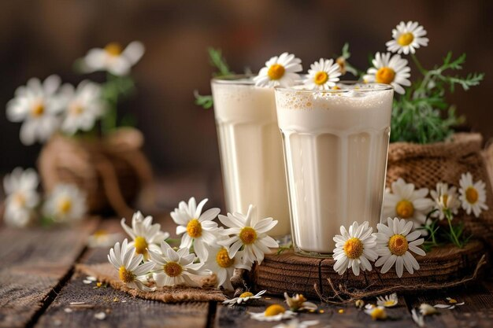

7 Refreshing Drinks

Masala Chai
Ingredients: Tea leaves, milk, water, sugar, cardamom, ginger, cinnamon.
Steps:
- Boil water with cardamom, ginger, and cinnamon.
- Add tea leaves and simmer for 2 minutes.
- Add milk and sugar, boil till frothy.
- Strain and serve hot.

Mango Lassi
Ingredients: Ripe mango, yogurt, sugar, milk, cardamom.
Steps:
- Blend mango pulp with yogurt and sugar.
- Add milk to adjust consistency.
- Sprinkle cardamom powder on top.
- Serve chilled.

Fresh Lime Soda
Ingredients: Lime, soda water, sugar, salt, ice cubes.
Steps:
- Squeeze fresh lime juice into a glass.
- Add sugar and salt to taste.
- Pour soda water and mix gently.
- Add ice cubes and serve immediately.

Buttermilk (Chaas)
Ingredients: Yogurt, water, salt, roasted cumin powder, mint leaves.
Steps:
- Whisk yogurt with water until smooth.
- Add salt and roasted cumin powder.
- Garnish with chopped mint leaves.
- Serve chilled.

Hot Chocolate
Ingredients: Milk, cocoa powder, sugar, chocolate syrup, marshmallows.
Steps:
- Heat milk in a saucepan.
- Add cocoa powder and sugar, stir well.
- Pour into a cup and drizzle with chocolate syrup.
- Top with marshmallows and serve hot.